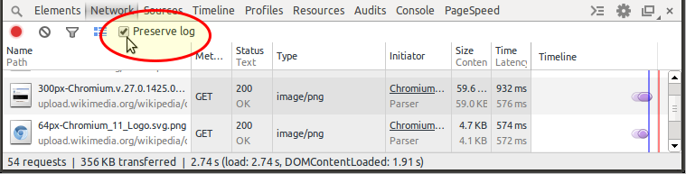
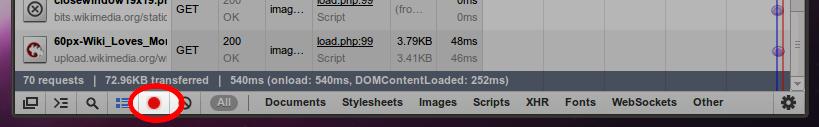

How to use Chrome's network debugger with redirects
The Chrome network debugger gives me a great view of all the HTTP resources loaded for a page. But it clears the list whenever a new top-level HTML page is loaded. This makes it very difficult to debug pages that automatically reload for one reason or another (running script or 300 responses).
Can I tell Chrome not to clear the network debugger when a new top-level page is loaded? Or can I go back and look at the previous page's network resources?
Or can I somehow force Chrome to pause before loading a new page when I don't control the page I'm trying to debug that's doing the redirecting? It's part of an OpenID dance that's going awry, so the combination of SSL and credentials makes it extremely difficult to debug with command-line tools.
Answer
This has been changed since v32, thanks to @Daniel Alexiuc & @Thanatos for their comments.
Current (≥ v32)
At the top of the "Network" tab of DevTools, there's a checkbox to switch on the "Preserve log" functionality. If it is checked, the network log is preserved on page load.

The little red dot on the left now has the purpose to switch network logging on and off completely.
Older versions
In older versions of Chrome (v21 here), there's a little, clickable red dot in the footer of the "Network" tab.

If you hover over it, it will tell you, that it will "Preserve Log Upon Navigation" when it is activated. It holds the promise.
Suggest
I don't know of a way to force Chrome to not clear the Network debugger, but this might accomplish what you're looking for:
- Open the js console
window.addEventListener("beforeunload", function() { debugger; }, false)
This will pause chrome before loading the new page by hitting a breakpoint.